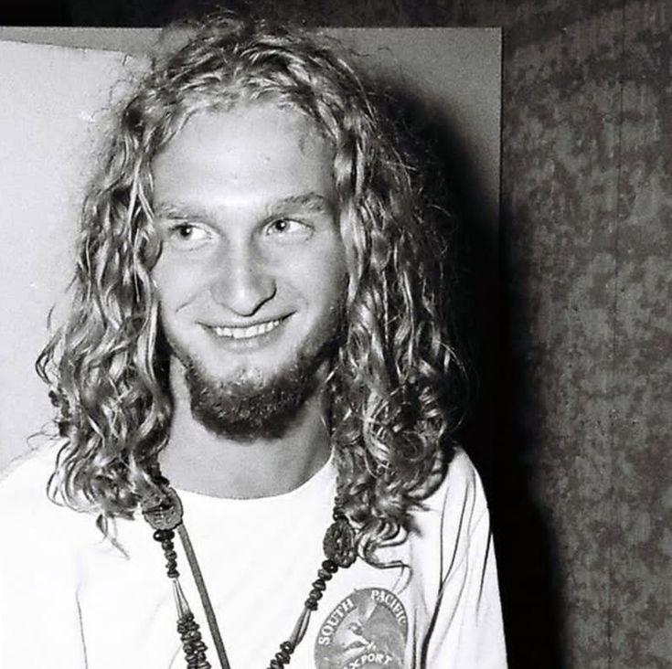
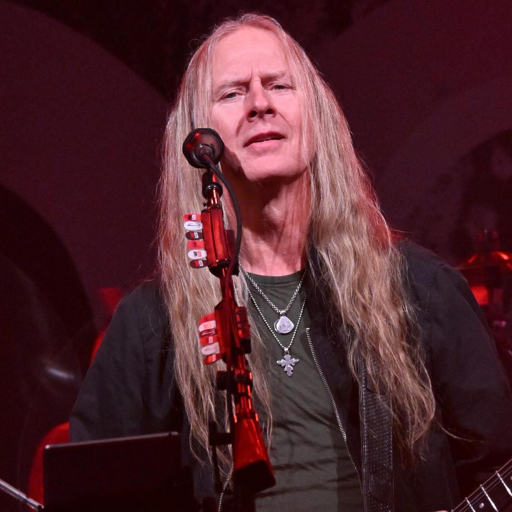
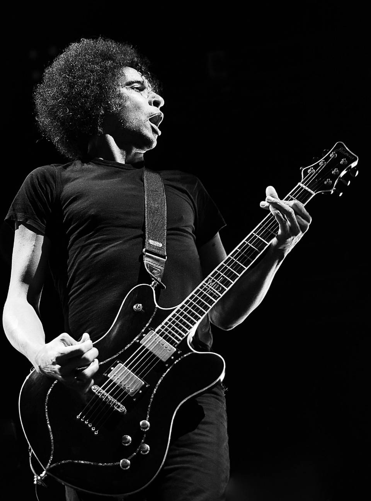
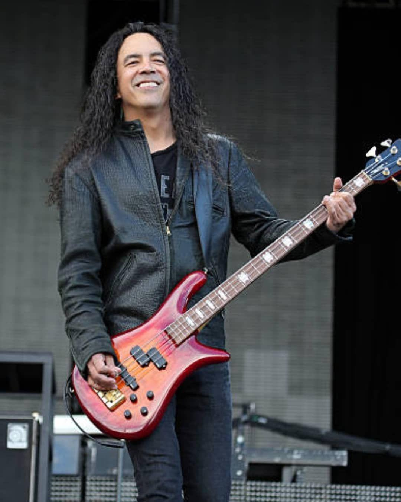

Layne Staley (ex-vocalista)
22/8/1967 | 05/04/2002

Jerry Cantrell(guitarrista)
18/03/1966
Sean Kinney(baterista)
27/05/1966
Mike Starr(ex-baixista)
04/04/1966|08/02/2011

William DuVall(co-vocalista e guitarrista rítimico)
06/09/1967

Mike Inez(baixista)
14/05/1966